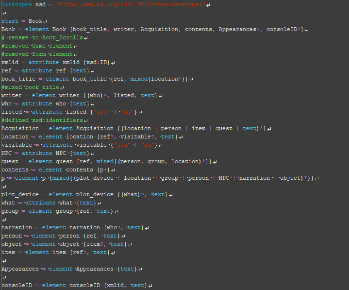
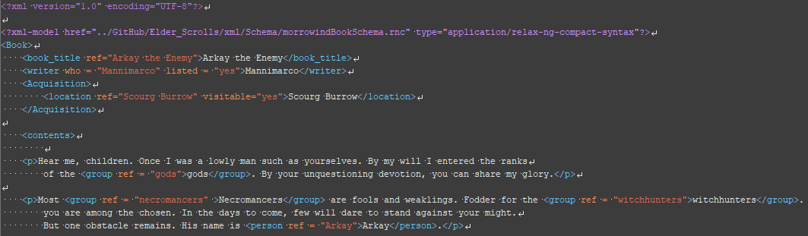
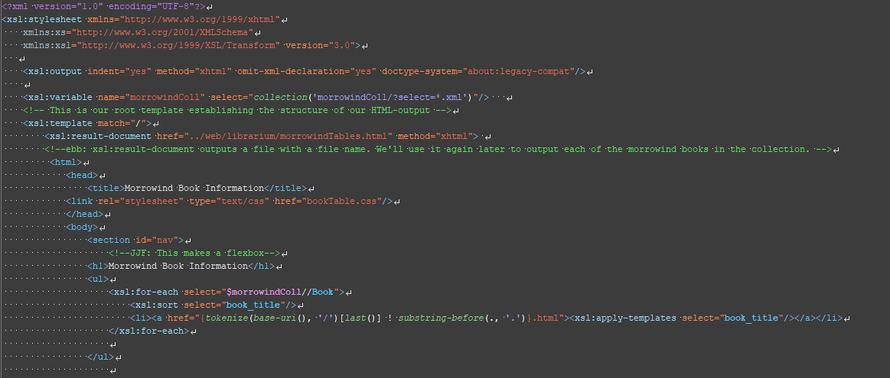

“The Elder Scrolls” is a video game series created by Bethesda Softworks which involves modern fantasy tropes such as Elves, Quests, and Dragons. During the course of these games, the player can learn about the background information/lore by reading books gathered in the games. There main problem is that these books need to be acquired before you can read them, they are written in different writing styles, the information is often complex and is out of context unless a book series is complete, and they take away from the pace of the game. Our project group decided that this is a serious problem within the game and so much content is being ignored and overshadowed and needed to be organized, recorded, and simplified into a collection that displayed the most important information, and compared it with the other in-game books. Our project’s objective is to compile all of the books exclusively from the third installment of “The Elder Scrolls lll: Morrowind” and display the contents about NPC’s, Factions, in-game Items, and Locations into table that we decided to name Librarium in order to make reaching these topics easier for a player to comprehend. The Librarium also shows how many times the contents are mentioned within the confines of the books.
“The Elder Scrolls” is a video game series created by Bethesda Softworks which involves modern fantasy tropes such as Elves, Quests, and Dragons. During the course of these games, the player can learn about the background information/lore by reading books gathered in the games. There main problem is that these books need to be acquired before you can read them, they are written in different writing styles, the information is often complex and is out of context unless a book series is complete, and they take away from the pace of the game. Our project group decided that this is a serious problem within the game and so much content is being ignored and overshadowed and needed to be organized, recorded, and simplified into a collection that displayed the most important information, and compared it with the other in-game books. Our project’s objective is to compile all of the books exclusively from the third installment of “The Elder Scrolls lll: Morrowind” and display the contents about NPC’s, Factions, in-game Items, and Locations into table that we decided to name Librarium in order to make reaching these topics easier for a player to comprehend. The Librarium also shows how many times the contents are mentioned within the confines of the books.
After the schema was created, all of the morrowind exclusive books were captured and were tagged with XML markup, emphasizing the importance of capturing the key elements within the contents such as; people, in-game items, groups, and locations.
In order to make our content visible on the website, the previous XML markup had to be converted over to the html format. This conversion was done by using XSLT (eXtensible Stylesheet Language Transformations) by essentially creating a searchable book generator that would convert the filenames of the .xml to those of .html and make the appropriate changes to correspond to the website format.
The XSLT code then reached into markup and counted how many unique ref values were within a book and counted them in table, and found the first mention of that value within the table of contents.
In order to make the project unique compared to what a wiki would have to offer, the XSLT searched through and displayed how many times an item, location, group, and person was mentioned, and created a bar-graph of how many times those elements would appear in this book compared to the rest. This allowed us to find the book’s that mentioned the most people, mentioned the most items, mentioned the most locations, and mentioned the most groups. The bar graph is technically described as an svg (Scalable Vector Graphics) but was converted and shown at the bottom of the books contents using a separate XSLT code.
According to the XSLT the project discovered where the most mentions of the in-game references are available in, all with the use of the xslt count function. The most mentions of locations are from the Guide to Vvardenfell with 174 mentions of location elements. The most mentions for the most in-game factions comes from the book Great Houses of Morrowind with a count of 49 mentions of groups/factions. The most mentions for the in-game items comes from the book The Alchemists Formulary with a count of 47 usable in-game items. Finally the most mentions for people within the elder scrolls is in the book The Four Suitors of Benitah with 58 mentions of people within the book.
Our team would like to personally thank Newtfire.org for hosting our project website on the server, for XSLT coding assistance, and feedback regarding our project. Another special thanks to Penn State Erie: The Behrend College Digital Humanities Department for allowing this project to happen.
A special thanks to the two wikis and all of the various contributors for giving the information allowing the xml markup to be compiled.